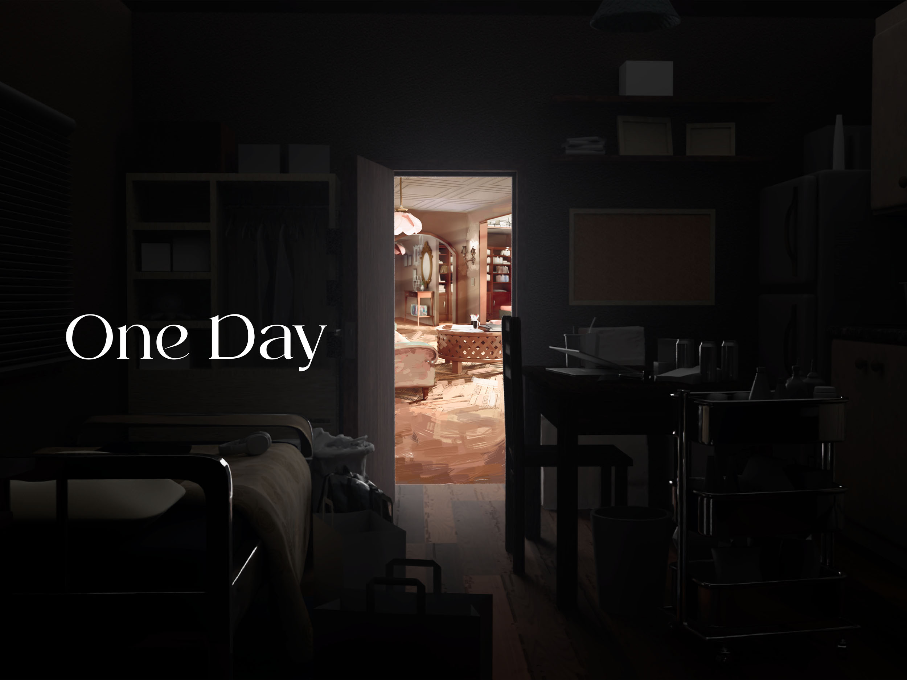
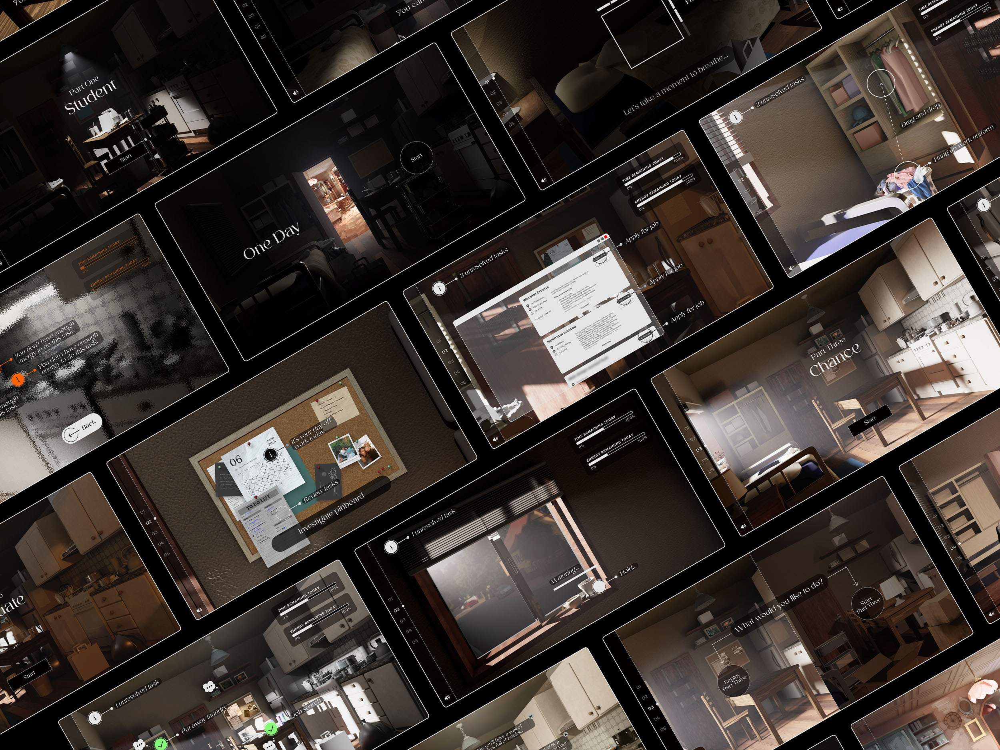
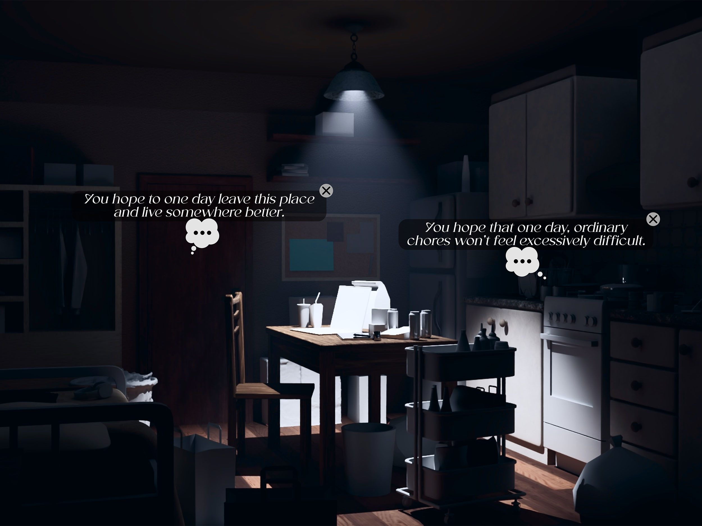
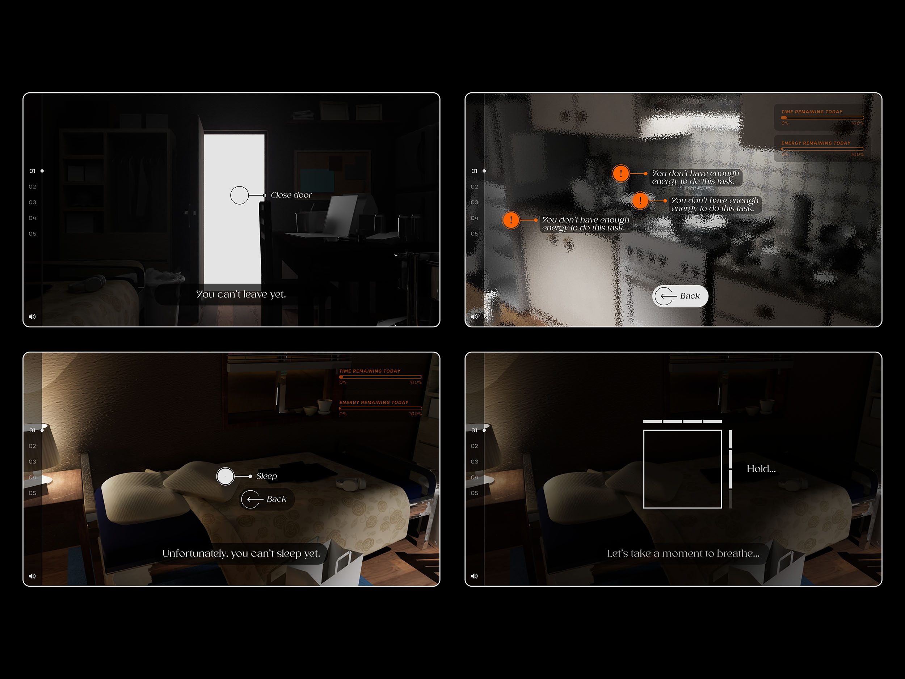
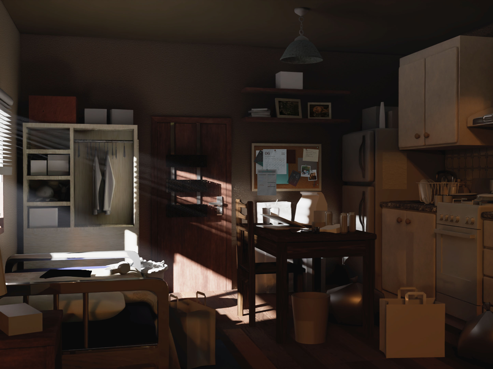
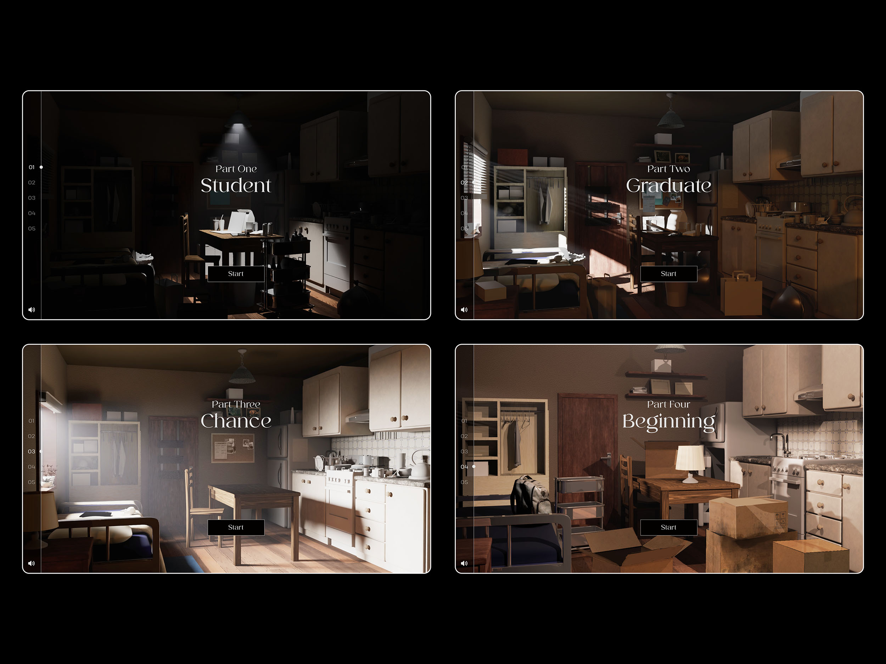
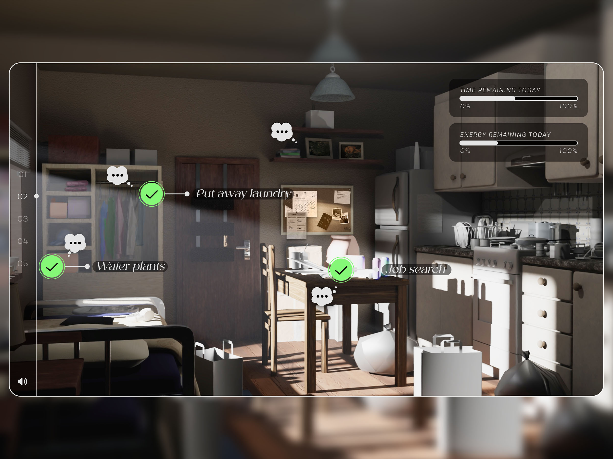
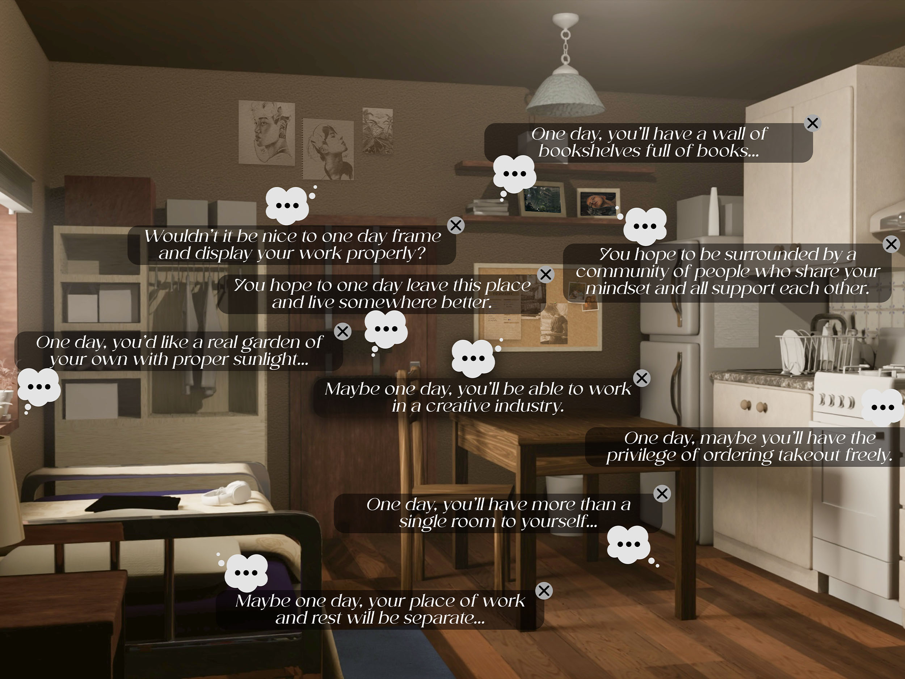
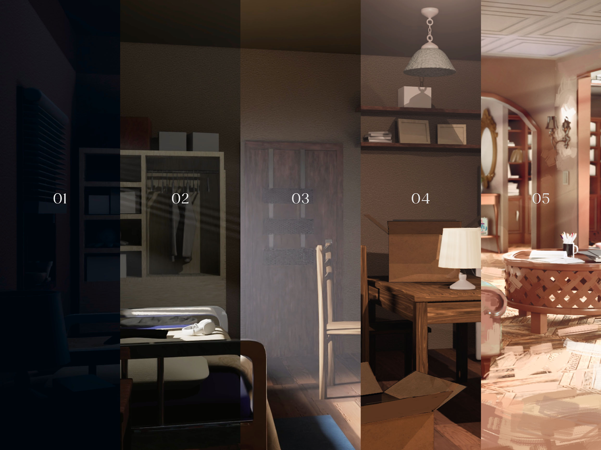
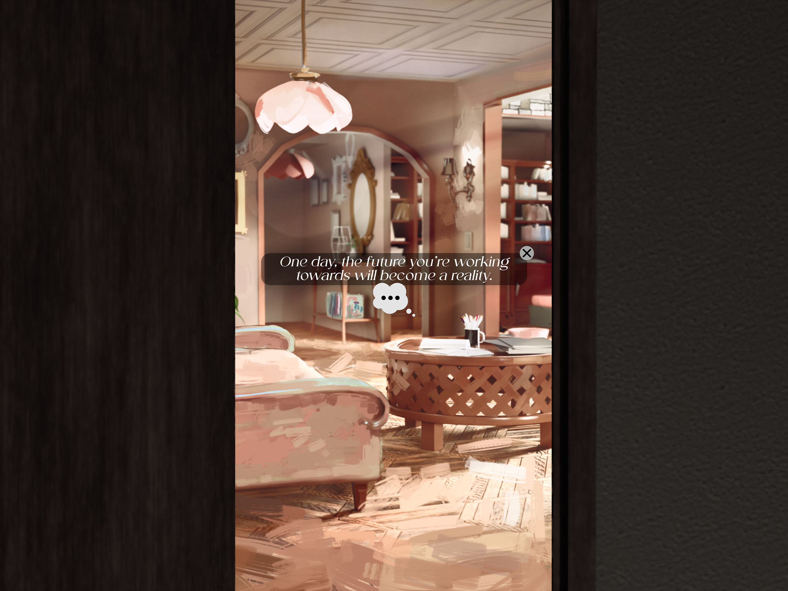

One Day
Interactive storytelling on the worries, expectations and hopes of young adults
My Roles
Tools
Project Duration
Feb 23, 2026 → Jun 26, 2026


Introduction
Young adults are simultaneously anxious and hopeful about the future
Everything is terrible and it’s only going to get worse–or at least it seems that way for many young adults who feel stuck in a transitional stage between adolescence and adulthood. They are uncertain, anxious, and pessimistic about the direction their lives are going, and feel like they’ll be stuck in this uncomfortable state indefinitely.
Discussions with young adults in the age range of 20-25 found that anxieties regarding the future stem from the problems that are occurring currently, and for this reason, the near future feels more daunting than the far future. Interestingly, many young adults still feel hopeful that eventually, things will work out despite all the evidence stacking in the other direction. They are hopeful despite the anxiety.
Additionally, the challenges, worries, and hopes of young adults have strong ties to their living environment–both dissatisfaction with their current living situation, as well as a hope that their future self will be in a better place.
These findings led to the focus of this project: to create a story about this experience of transitioning into adulthood, and the struggles, worries, expectations and hopes that come with it. In particular, the aim is to reframe these anxieties and craft a message that is ultimately hopeful.
‘One Day’ had three primary approaches: using environment design to tell a story about a young adult character; communicating a story by showing this environment going through changes over a period of time; use of exploratory interactive storytelling to allow the audience to be not just an outside observer of the story but an active participant.
The story itself is set in a single-room living space, taking the user through the experience of being an adult through four stages of life. In the first stage, the user plays as a student who is bumbling around with very little capacity to get through tasks–mirroring the state of being unstable and uncertain which many young adults feel in the early stages of adulthood. The second part transitions into a few years after graduation, where some things are slightly more manageable but ongoing challenges and sources of anxiety continue to persist, such as job hunting and struggling to balance time and energy for work, hobbies, chores. These challenges get easier in the next part, which is the turning point in the story when the time and effort starts to pay off, and ‘balancing life’ is less of a challenge for the character and user. Part four is when the character and user moves away from this stage of life into a new chapter by moving into a new living space. The new living space represents the future that this young adult character hopes to reach one day.
Throughout these stages, the environment changes alongside the journey of the character and user. As the challenges and sources of anxiety become more manageable, more hopes appear, and the living space becomes more liveable. This is intended to be a reflection of the young adult character’s state of mind also becoming less anxious and more hopeful.
All these elements come together to form the interactive story ‘One Day’ as an expression of a young adult experience with two guiding messages at the core: to take it one day at a time, and to continue believing that one day, the future you’re working towards will become a reality. Hence, the name ‘One Day’.







